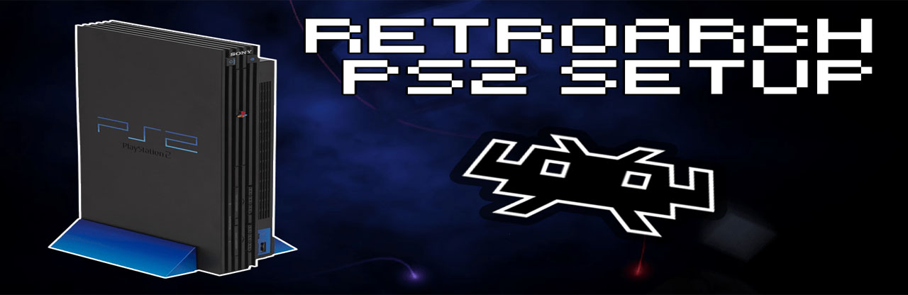

PS2 RetroArch
RetroArch es una interfaz para emuladores, motores de juegos y reproductores multimedia. Le permite ejecutar juegos clásicos en una amplia gama de computadoras y consolas a través de su elegante interfaz gráfica.
Para esta Guia
Requisitos para este tutorial
- USB en formato FAT32
Para Empezar este Tutorial
- Para comenzar descargamos nuestro archivo RetroArch_elf lo descomprimimos y lo copiamos a nuestra USB en FAT32
- Para los juegos creamos una carpeta llamada ROMS y pasamos todos los juegos Retro dentro (dejarlo en carpeta para tenerlos más ordenada como ej: NES,SNES,etc)
- Para dejar nuestra aplicación lista para usar podemos colocarla en el menú de APP del OPL (opcional para dejarlo fijo)
- Para esto debemos crear un archivo llamado
conf_apps.cfg - Y dentro colocamos lo siguiente
- Nombre APP=Ubicación quedaría de la siguiente forma ej:
RETROARCH=mass:/APPS/retroarch/raboot.elf - Lo guardamos y lo pasamos a la raíz de nuestro USB y listo.
- Todo listo conectamos nuestra USB a nuestra consola y abriremos Funtuna o FMCB para seguir con los siguientes pasos
- Opción 1 (para Probar)
- Abrimos uLaunchELF
- Esperamos que cargue y le damos al

- Después nos vamos a MASS:/ con (nuestro USB)
- Y buscamos el archivo raboot.elf y le damos al
- Y estaría listo.
- Opción 2 (para dejarlo en OPL)
- Con esta opción lo demos dejar en el menú del OPL
- Vamos a APP del menú de OPL y estaría con el nombre que le asignamos al archivo
conf_apps.cfg - Solo seleccionamos el nombre (RETROARCH) y listo.
- Una vez ejecutado nuestro RetroArch
- Para cargar nuestros juegos solo debemos seleccionar
- Load Content para cargar nuestro juego desde el USB seleccionamos con nuestro juego.
- Después de seleccionar nuestro juego debemos escoger nuestro Cores para nuestro juego dependiendo del tipo de consola Retro que le pasamos ej: (Atari, sega, NES, etc)
- Y nuestro juego se cargará correctamente
- Para cambiara de juego seleccionamos
 +
+  y Close content para cerrar el contenido
y Close content para cerrar el contenido - Y podremos cargar otro juego o salir de RetroArch.
- Y listo podemos cargar nuestros juegos retro.


×